| Min. | 1st Qu. | Median | Mean | 3rd Qu. | Max. |
|---|---|---|---|---|---|
| 0.1 | 0.5 | 2.3 | 8.05 | 8.4 | 262.6 |
TRUE
In recent years, Beijing has experienced several severe flooding events, highlighting its vulnerability to extreme summer rainfall. These disasters are closely tied to the city’s seasonal climate pattern, where a large portion of annual precipitation is concentrated in just a few months.
Notable events include the torrential rain on August 16, 2021, which caused fatal underpass flooding in Haidian district, and the “23·7” storm in late July 2023, during which some stations recorded over 500 mm of rainfall. Shortly after, Typhoon Doksuri’s remnants brought more intense rain, with Mentougou district receiving nearly 581 mm, forcing thousands to evacuate.
These extreme events not only caused widespread disruption but also raised concerns about how likely similar disasters are to recur. To better understand this risk, this study analyzes daily precipitation data in Beijing from 1960 to 2024 using Extreme Value Theory, focusing on quantifying the likelihood and severity of rare but high-impact rainfall events.
The application of Extreme Value Theory (EVT) to hydro-climatic extremes—particularly precipitation and flood analysis—is well-established. Ding et al. (2011) provide a comprehensive overview of recent advancements in EVT and their relevance to climate change research, emphasizing the utility of both the Generalized Extreme Value (GEV) distribution for block maxima and the Generalized Pareto Distribution (GPD) for threshold exceedances.
In the context of Beijing, Song, Zhang, and Kong (2018) conducted a detailed comparison of the AM-GEV and POT-GPD approaches using daily precipitation data from 1960 to 2012 across 45 rain gauge stations. They applied the L-moment method for parameter estimation and the Kolmogorov–Smirnov test for goodness-of-fit, concluding that GEV generally performed better for annual maxima, while GPD was more suitable for modeling threshold exceedances. Their findings also revealed spatial variation in return levels and showed that estimates derived from the AM approach were typically higher—providing a more conservative basis for risk assessment.
Further work by Song et al. (2019) investigated the causes of urban flooding in Beijing, highlighting not only changes in precipitation patterns (such as an increase in short-duration rainfall intensity despite an overall decline) but also the significant impact of urbanization, including land cover change, altered runoff processes, and limitations in drainage infrastructure.
In addition to these core studies, several other works offer valuable insights. He, Zeng, and Wang (2020) explored the use of MCMC methods to estimate parameters in extreme precipitation simulations, providing a Bayesian perspective for EVT modeling. Miao and Chen (2008) examined the influence of urbanization on summer rainfall in Beijing, noting increased precipitation intensity in urban areas due to land surface changes. Wu and Li (2017) proposed non-stationary GEV models with time-varying parameters, emphasizing the importance of capturing evolving climate dynamics when analyzing extreme precipitation trends in northern China. Together, these studies highlight the value of integrating advanced statistical methods, climate dynamics, and urban factors into extreme rainfall analysis.
Building on these foundations, this study adopts both the AM-GEV and POT-GPD frameworks to model extreme precipitation risk in Beijing using updated data from 1960 to 2024.
The analysis relies on publicly available daily precipitation records from NOAA (National Oceanic and Atmospheric Administration), specifically from the GHCND weather station CHM00054511 (Beijing Airport) located in Beijing. The dataset spans the period from 1960 to 2024 and includes total daily rainfall measurements.
For the purpose of extreme value analysis, only non-zero precipitation days were retained. This focuses the modeling on actual rainfall events and avoids distortion from dry days. The initial statistical summary (Table 1) reveals a mean of 8.05 mm for rainy days, with a maximum observed value of 262.60 mm. The distribution is highly right-skewed (Figure 1), which is typical for precipitation data—most days see light rainfall, but a few outliers reach very large values. This skewness highlights the relevance of Extreme Value Theory (EVT), which is specifically designed to analyze the tails of such distributions.
| Min. | 1st Qu. | Median | Mean | 3rd Qu. | Max. |
|---|---|---|---|---|---|
| 0.1 | 0.5 | 2.3 | 8.05 | 8.4 | 262.6 |
TRUE
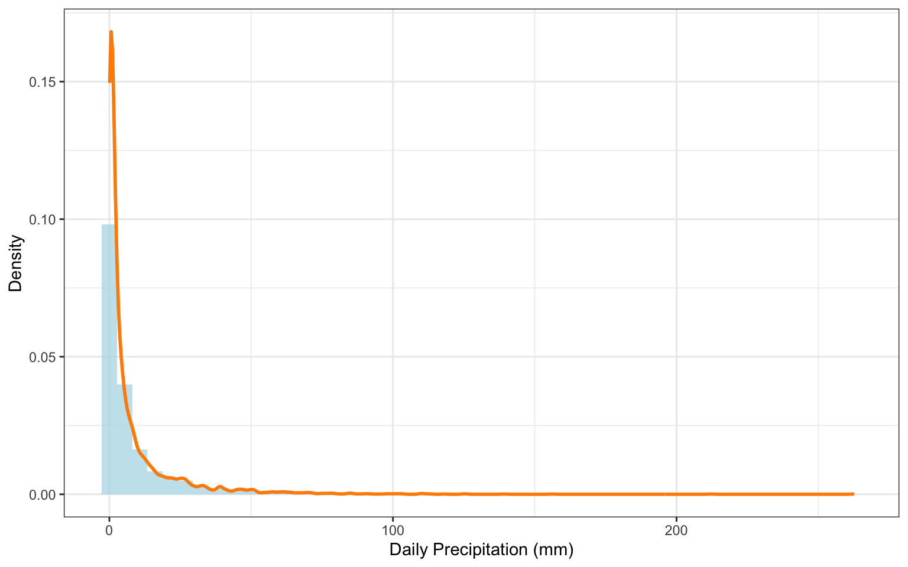
A time series plot (Figure 2) offers a closer look at the variability across the 65-year period. Years such as 1963, 1984, 2016, and especially 2023 stand out with unusually high daily rainfall. However, these extreme spikes occur irregularly and without a clear trend. This unpredictability is precisely what motivates the use of EVT—to help assess the probability and impact of rare but severe rainfall events that could drive urban flooding and infrastructure stress.
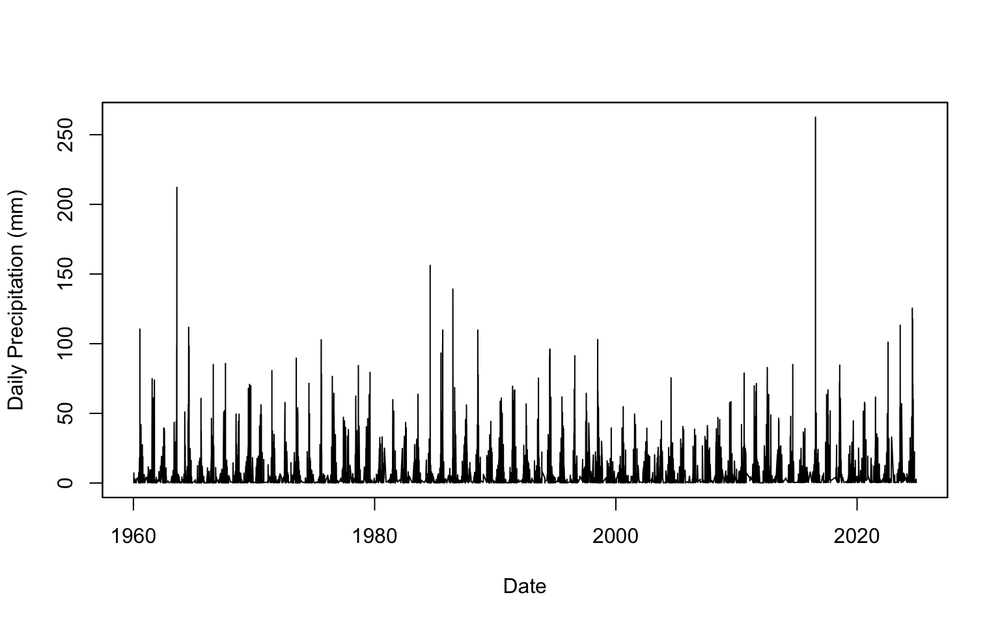
To analyze extreme rainfall risk, this study applies two commonly used approaches from Extreme Value Theory (EVT): the Generalized Extreme Value (GEV) distribution and the Generalized Pareto Distribution (GPD).
The GEV model is based on the block maxima method, which extracts the maximum daily rainfall for each year. In contrast, the GPD model uses the peaks over threshold (POT) method, which considers all daily rainfall values that exceed a selected threshold.
Both models are fitted to the same precipitation dataset to ensure a consistent comparison. The following sections will present the model fitting results for each approach and compare their estimates of return levels and risk metrics.
This section assesses the climate risk from extreme precipitation using the Peaks Over Threshold (POT) method, modeling threshold exceedances with the Generalized Pareto Distribution (GPD).
Under the POT framework, for a chosen threshold u, the exceedances \(y = x - u\) are modeled using the GPD:
\[ G_{\xi,\beta}(y) = 1 - \left(1 + \frac{\xi y}{\beta} \right)^{-1/\xi}, \quad \text{for } y > 0, \ \beta > 0, \ 1 + \frac{\xi y}{\beta} > 0 \]
Here, \(\beta\) is the scale parameter and \(\xi\) is the shape parameter. The sign of \(\xi\) determines the tail behavior of the distribution.
Diagnostic plots guide the selection of an appropriate threshold (u) above which precipitation events are considered extreme for GPD modeling.
The Mean Excess Plot and GPD Shape Parameter Plot (Figure 3) are used to identify a suitable threshold. Based on these diagnostics (showing relative linearity in the mean excess and some stability in the shape parameter around positive values), a threshold of u1_pot = 23.2 mm is selected for the primary POT analysis. This positive shape parameter suggests a heavy-tailed risk profile, implying a non-negligible probability of very high precipitation events.
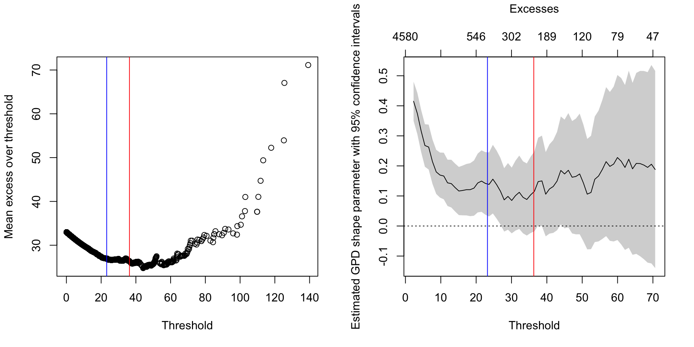
The GPD is fitted to the precipitation amounts exceeding the threshold u1_pot = 23.2 mm. The GPD model fitting (Table 2) yields a shape parameter ξ ≈ 0.14 > 0 and scale parameter σ ≈ 17.9. The positive shape parameter confirms the heavy-tailed nature, implying a relatively higher risk of very large precipitation events compared to distributions with exponential or lighter tails. The model converged successfully.
| Parameter | Value |
|---|---|
| Shape (ξ) | 0.1397 |
| Scale (σ) | 17.9036 |
| Shape SE | 0.0538 |
| Scale SE | 1.2713 |
| Log-Likelihood | 1835.2709 |
| Convergence Status | Converged |
TRUE
The diagnostic plots (Figure 4) suggest the GPD model reasonably captures the distribution of precipitation excesses. The EDF plot (left) shows good agreement between the empirical and fitted cumulative distributions. The Q-Q plot (right) shows points generally falling along the diagonal, indicating a good fit, although slight deviations in the upper tail suggest potential underestimation of the most extreme risks.
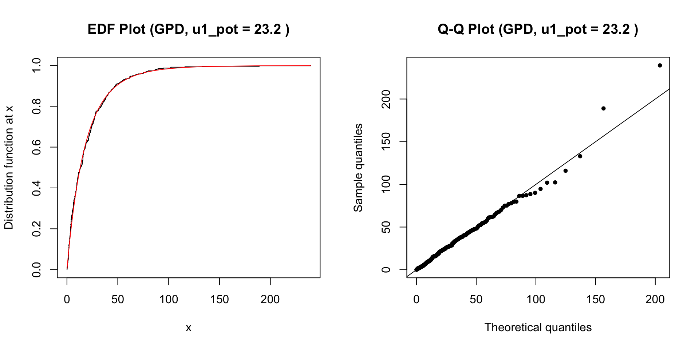
The calculated risk measures (Table 3) quantify specific levels of precipitation risk. The 99% VaR of 71.72 mm represents a high-magnitude event expected to be exceeded on only 1% of rainy days. The 99% ES of 100.40 mm indicates that when such an event occurs (i.e., precipitation > 71.72 mm), the average precipitation is expected to be substantially higher, around 100.40 mm, highlighting the potential severity of these tail events and the associated climate risk.
| Level | VaR (mm) | ES (mm) |
|---|---|---|
| 95% | 36.14 | 59.05 |
| 99% | 71.72 | 100.40 |
TRUE
Further visualization of the tail and estimation of return levels provide insights into the frequency and magnitude of high-risk events.
The tail probability plots illustrate the fitted GPD tail along with confidence intervals for the 99% VaR (Figure 5) and ES (Figure 6) estimates, quantifying the uncertainty around these risk measures. These figures demonstrate that the model generally aligns well with the observed data in the upper tail, though the widening confidence bands near the extremes indicate increased uncertainty as values become rarer. The tail_plot (Figure 7) provides an alternative visualization of the tail fit relative to the empirical data. These plots highlight both the rarity and potential severity of extreme rainfall events and emphasize the usefulness of GPD-based risk measures for understanding and preparing for high-impact climate extremes.
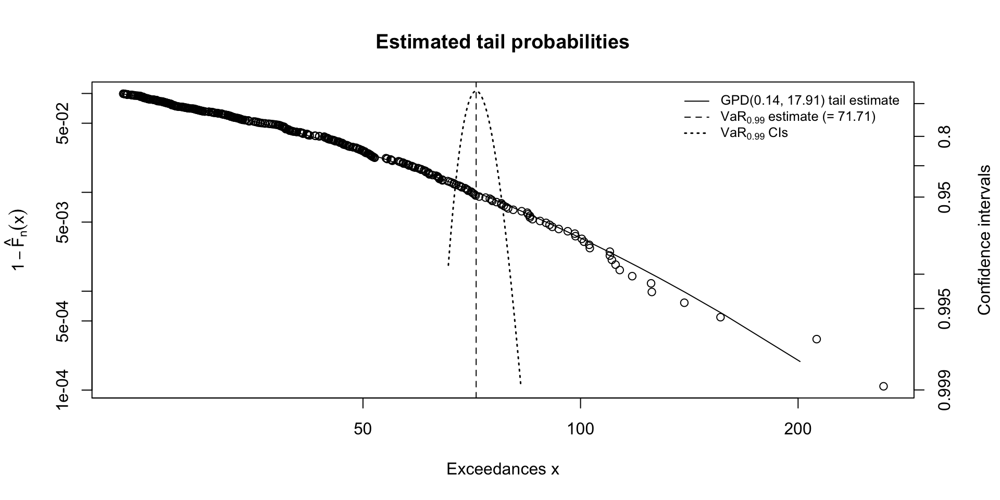
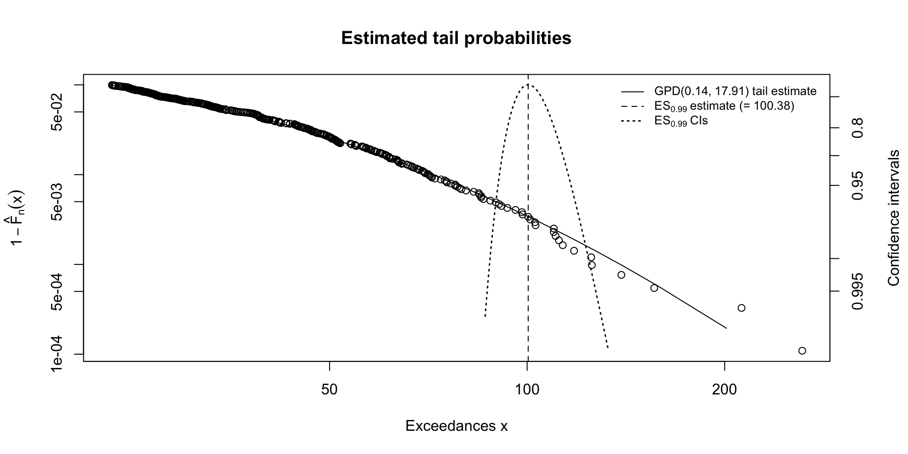
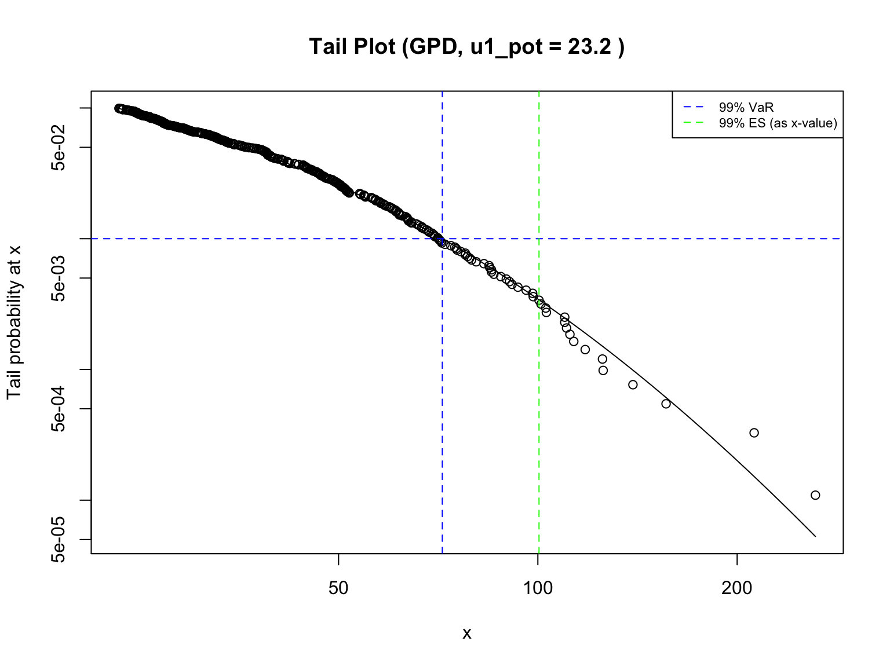
A return level refers to the estimated magnitude of a precipitation event expected to be equaled or exceeded once every T years, on average. For example, a 10-year return level represents the rainfall amount with a 10% chance of being exceeded in any given year, while a 100-year return level corresponds to a 1% annual exceedance probability.
In Figure 8 and Table 4, the estimated 100-year return level is approximately 298 mm, meaning that, under current statistical assumptions, daily rainfall of this magnitude is expected to occur about once every 100 years. Similarly, 260.56 mm corresponds to a 50-year event, and 187.02 mm to a 10-year event. These values provide critical guidance for designing flood-resilient infrastructure and planning for rare but severe climate risks.
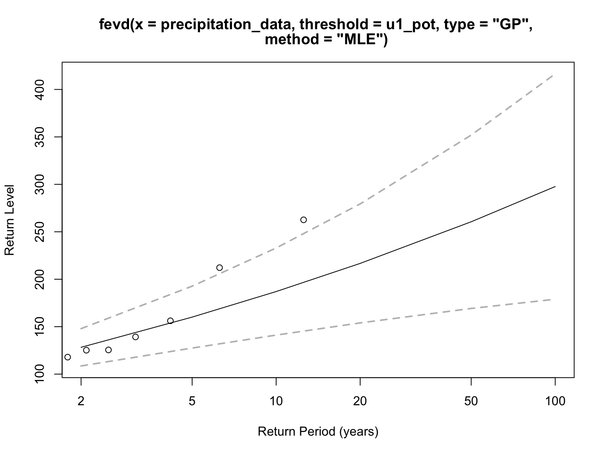
| Return Period (Years) | Return Level (mm) |
|---|---|
| 10 | 187.02 |
| 50 | 260.56 |
| 100 | 297.69 |
TRUE
This section employs the Annual Maxima (AM) method and the Generalized Extreme Value (GEV) distribution to provide an alternative assessment of extreme precipitation risk, focusing on the largest event each year.
The Annual Maxima (AM) method, paired with the Generalized Extreme Value (GEV) distribution, represents a classical and widely adopted framework in extreme value analysis, particularly within hydrological and climatological applications. Its significance and utility in empirical research are multi-faceted.
Under the AM framework, the block maxima (e.g., annual maxima) are modeled using the Generalized Extreme Value (GEV) distribution:
\[ H_{\xi,\mu, \sigma}(x) = \exp \left\{ - \left[ 1 + \frac{\xi (x - \mu)}{\sigma} \right]^{-1/\xi} \right\}, \quad \text{for } 1 + \frac{\xi (x - \mu)}{\sigma} > 0, \ \sigma > 0 \]
Here, \(\mu\) is the location parameter, \(\sigma\) is the scale parameter, and \(\xi\) is the shape parameter. The sign of \(\xi\) determines the type of tail:
\(\xi\) > 0: heavy-tailed (Fréchet),
\(\xi\) = 0: light-tailed (Gumbel, obtained as a limit),
\(\xi\) < 0: bounded tail (Weibull).
While the AM method is less data-efficient than POT (using only one value per year), its strong theoretical basis, ease of interpretation in terms of annual return periods, and direct relevance to many impact-driving events make the AM-GEV analysis an indispensable tool for empirical research aimed at understanding and managing risks associated with high-impact, low-frequency environmental extremes.
Figure 9 shows a sequence containing the single highest daily precipitation value for each year. The output confirms that 65 such annual maximum values were successfully extracted from the dataset. The plot illustrates substantial interannual variability, with some extreme spikes clearly visible — such as in 1963, 1983, and especially 2016, which saw the most intense daily rainfall. These irregular but impactful peaks highlight the relevance of using extreme value methods to assess precipitation risk.
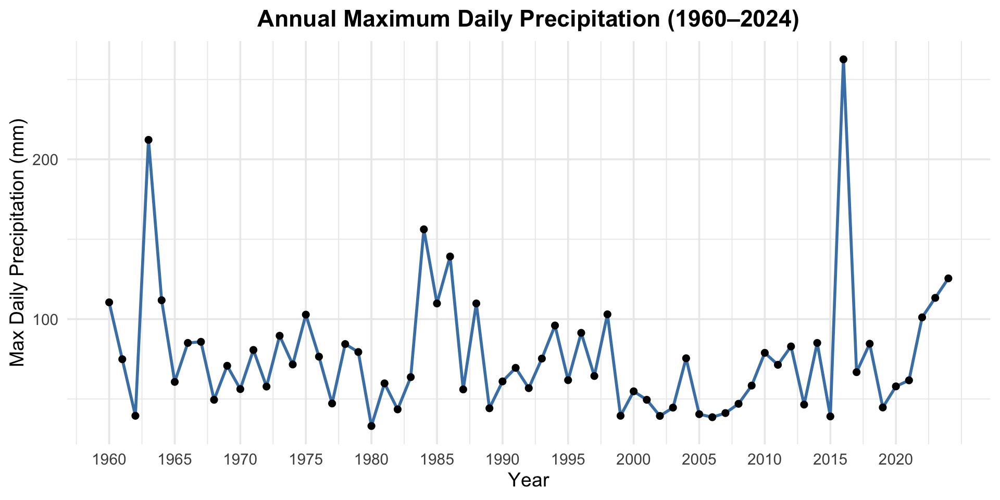
The GEV model fit to the annual maxima (Table 5) yields location μ ≈ 58.23, scale σ ≈ 20.50, and shape ξ ≈ 0.27 > 0. The positive shape parameter again suggests a Fréchet-type heavy-tailed distribution for the annual maximum events, implying a non-negligible risk of extremely high annual peaks. The model converged successfully.
| Parameter | Value |
|---|---|
| Location (μ) | 58.2341 |
| Scale (σ) | 20.4993 |
| Shape (ξ) | 0.2697 |
| Location SE | 2.9896 |
| Scale SE | 2.4880 |
| Shape SE | 0.1249 |
| Log-Likelihood | -308.8100 |
| AIC | 623.6201 |
| BIC | 630.1432 |
| Convergence Status | Converged |
TRUE
The diagnostic plots (Figure 10) indicate a reasonable fit of the GEV model. The Q-Q plots (top row) show good alignment between empirical and model quantiles, with some expected deviation for the highest values. The density plot (bottom left) shows the fitted GEV density capturing the empirical distribution shape well. The return level plot (bottom right) confirms that most observed annual maxima fall within the model’s confidence intervals.
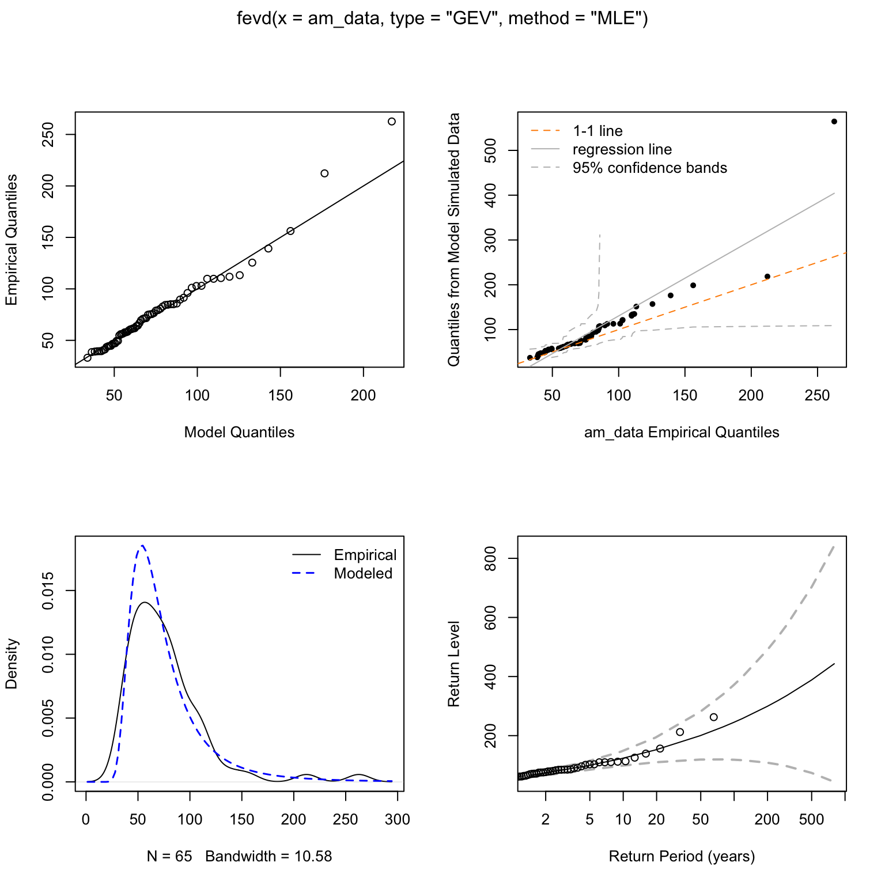
The return level plot (Figure 11) and table (Table 6) show the estimated magnitudes for annual maximum precipitation events with different return periods. The 10-year return level is approximately 121.68 mm, the 50-year event is around 199.94 mm, and the 100-year event is about 245.05 mm. These values represent the intensity of rare but impactful rainfall events expected to occur once every 10, 50, or 100 years on average, and serve as important references for infrastructure design and flood risk planning. Compared to the POT-GPD model, the return levels here are slightly lower, as the GEV model only considers the single maximum value per year, potentially underestimating some clustered extremes.
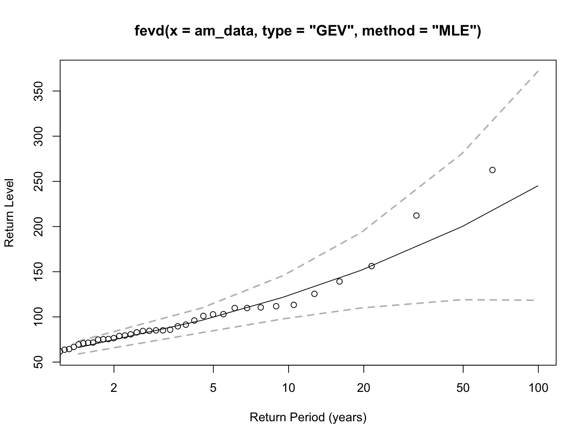
| Return Period (Years) | Return Level (mm) |
|---|---|
| 10 | 121.68 |
| 50 | 199.94 |
| 100 | 245.05 |
TRUE
Figure 12 provides a comparison of return level estimates from the AM-GEV and POT-GPD models across different return periods. For the 10-year event, the GEV method yields an estimate of approximately 121.7 mm, while the POT method estimates about 187.0 mm. For the 50-year return period, the GEV estimate is 199.9 mm versus 260.6 mm from the POT model. Most notably, the estimated 100-year return level is approximately 245.0 mm under the GEV model, compared to about 297.7 mm under the POT-GPD approach. This reveals a consistent pattern where the POT method produces higher return level estimates at all return periods.
These discrepancies underscore the impact of methodological choice on the assessment of extreme precipitation risk. The POT model makes use of all daily rainfall values exceeding a defined threshold, allowing it to capture more frequent exceedance behavior and better represent the upper tail. In contrast, the AM-GEV model relies solely on one annual maximum per year, which may overlook additional extreme events. As noted in previous studies (Song, Zhang, and Kong 2018), such differences are expected and highlight the need to interpret EVT results in context. By presenting a return level range (≈245–298 mm for the 100-year event), this analysis offers a more robust foundation for climate risk planning and decision-making, while acknowledging the inherent uncertainties involved.
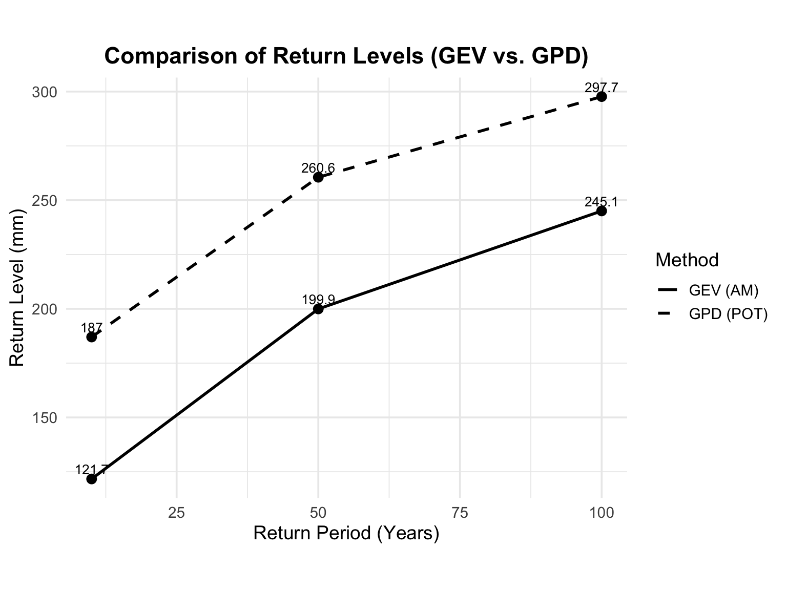
This study applies Extreme Value Theory (EVT) methods—specifically the Peaks Over Threshold (POT-GPD) and Annual Maxima (AM-GEV) approaches—to assess the risk of extreme daily precipitation in Beijing, utilizing observational data from 1960 to 2024. Based on the analysis, the following main conclusions can be drawn.
Both models support the existence of heavy-tailed risk.
The shape parameter ξ was positive in both the GEV and GPD analyses (ξ ≈ 0.27 for GEV; ξ ≈ 0.14 for GPD), indicating a heavy-tailed distribution. This supports the suitability of EVT for modeling Beijing’s extreme precipitation, where rare but severe rainfall events pose significant climate risks.
Quantitative estimates for risk measures and return levels were obtained.
Under the AM-GEV model, the estimated return levels were approximately 122 mm (10-year), 200 mm (50-year), and 245 mm (100-year); Under the POT-GPD model, the estimates were 187 mm, 261 mm, and 298 mm for the same return periods. Additionally, tail risk metrics such as the 99% Value-at-Risk (VaR) and Expected Shortfall (ES) under the GPD model were estimated at 71.7 mm and 100.4 mm, respectively, conditional on wet days.
The choice of method influences the risk estimates.
POT-GPD consistently yielded higher return level estimates compared to AM-GEV. This is because POT uses all exceedances above a threshold, making more efficient use of tail data, while AM only uses one annual maximum. As a result, POT provides a more conservative estimate of climate risk. For instance, the 100-year return level was estimated at ~298 mm by GPD versus ~245 mm by GEV. This discrepancy suggests that POT-GPD may be better suited for precautionary planning in infrastructure design and disaster risk management, where underestimating extremes could have severe consequences.
Building on the current analysis, several directions could be pursued to improve and expand the assessment of extreme precipitation risk:
Include data from more observation stations.
This study focused on a single weather station in Beijing. Future work could incorporate data from additional stations across the city and surrounding areas to improve spatial coverage and capture local variability in extreme rainfall patterns. This would enable more robust regional risk estimation and highlight urban microclimate differences.
Incorporate non-stationary EVT models.
The current analysis assumes that the statistical properties of extreme rainfall (e.g., location and scale) remain constant over time. However, this assumption may not hold in the presence of long-term trends caused by urbanization or climate change, as highlighted by Song et al. (2019). Non-stationary EVT allows model parameters to vary with covariates (e.g., time, temperature, urban land cover), enabling the detection of evolving risk patterns.
Explore Bayesian EVT methods using MCMC.
Bayesian approaches, such as those explored by He, Zeng, and Wang (2020), allow for full probabilistic inference of model parameters. Unlike point estimates from MLE, Bayesian inference yields posterior distributions, providing direct insights into parameter uncertainty and confidence intervals. This helps evaluate the stability of return level estimates and simulate best- or worst-case scenarios, which is especially useful in risk-sensitive planning and decision-making.